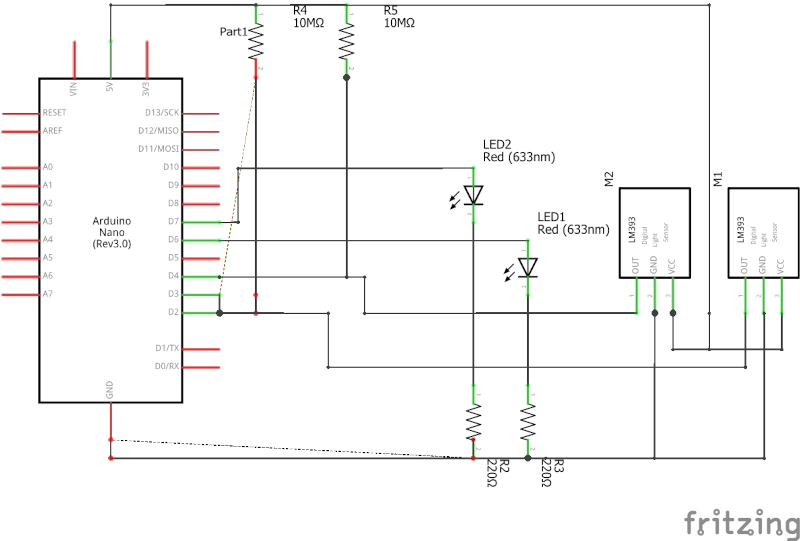
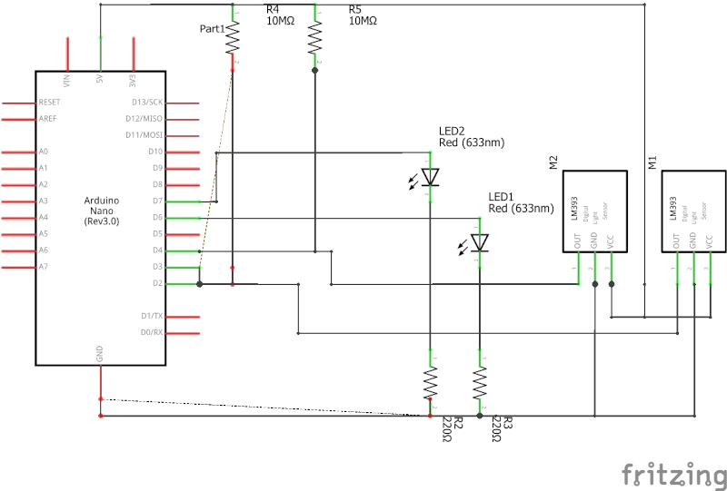
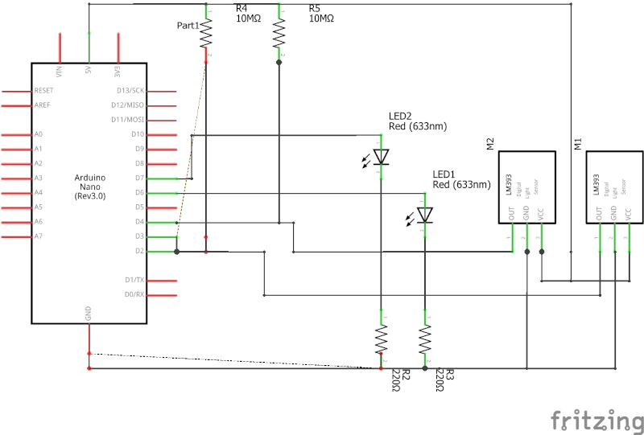

Unsere Aufgabe war es als Gruppe für das Erstsemesterprojekt, im folgenenden "ESP" genannt, zwei Arduinos mithilfe von Leds und Photoresistoren miteinander kommunizieren zu lassen und unsere Arbeit hiermit zu dokumentieren.
Die notwendigen Bauteile wurden uns hierfür pro Person von der Hochschule zur Verfügung gestellt:
Da der Wissensstand innerhalb der Gruppe zum Thema Arduino sehr verschieden war, wurde nur zeitgleich und immer gemeinsam gearbeitet. Die Teilenhmer, welche bereits einiges an Erfahrung mit sich brachten, fungierten eher als Lehrpersonen, die den anderen das nötige Wissen überschaubar vermittelt haben, sodass alle dann gemeinsam die Aufgaben bearbeiten konnten.
Das Entwickeln der Strategie für die Kommunikation, zu versuchen bereits bestehende Protokolle (als Basis) zu verwenden, war schnell erledigt. Der Versuch die nativen Protokolle des Arduinos zu verwenden scheiterte jedoch schnell, da alle Standardprotokolle viel zu schnell sind um mit LEDs verwendet werden zu können. Hinzukommt, dass uns zunächst entangen ist, dass der LM392 das Signal negiert ausgibt, welches uns erst einiges später auffiel. Schließlich entschlossen wir uns für eine serielle Kommunikation auf Basis des Protokolls I2C. Dieses Protokoll ist bei fast jedem modernen Microprocessor Hardwaremäßig implementiert für eine schneller Kommunikation. Bei diesem Protokoll ist in der Regel ein "Master" deklariert und mehrere "Slaves" welche alle gemeinsam an zwei Datenleitungen angeschlossen sind: "Data" und "Clock". Immer wenn die Spannung auf "Clock" von 0V auf 3.3/5V ändert wird auf "Data" der Zustand (Bit) abgelesen, bis sich letztendlich, nach einigen Takten ein Byte (8 Bit) ergeben. Das Standardprotokoll arbeitet eigentlich mit Adressen um zu differnezieren an wen und von wem die Nachricht gesendet wurde.
Unser Protokoll übernimmt dabei nur das Prinzip von "Data" und "Clock", somit kann ein Empfangsmodul nur mit einem Sendermodul verbunden werden und vice versa.
Hier einmal die Schematics in der Arduino Schematic Software fritzing

In dieser Schematic wurde der zum Arduino Uno funktionsidentische Arduino Nano verwendet und die Grafik übersitchlicher und kompakter zu gestalten. Beide Arduinoversionen besitzen denselben Prozessor (ATmega328P) und dieselben Pins. Die einzigen Unterschiede beider sind zum einen der Formfakor und zum anderen die Möglichkeit des Nanos, direkt auf ein Breadboard gesteckt werden zu können. Dargestellt wurde hier ein einzelner Arduino, der in der Lage ist sowohl zu Empfangen als auch zu Senden, wenn das passend aufgebaute Gegenstück existiert.
Unser Programm wurde in C++ für die Arduino IDE geschrieben, schaue man sich frühere Commits an (vor dem 18.12.2020) wurde noch für eine andere IDE gechrieben: PaltformIO welche zwar auf der Arduino IDE basiert, jedoch hier nur eine Extension für die IDE VS Code ist. Einfacheitshalber wurde jedoch entgültig zur Arduino IDE gewechselt.
LED_SendSimple.ino
//init variables
int LED = 2;
int incomingByte, ByteToSend;
int SerialCounter = -1;
//serial input buffer used as a stack
int SerialBuffer[10];
int MaxValue = 4;
int ClockCounter = 0;
boolean state = 0;
int BitsToSend = -1;
void setup() {
//init serial interface
Serial.begin(9600);
pinMode(LED, OUTPUT);
}
void loop() {
//read serial input if available
if(Serial.available() > 0){
incomingByte = Serial.read();
if (incomingByte >= 32){
//increment serial counter
SerialCounter++;
//store recieved byte from serial into stack buffer
SerialBuffer[SerialCounter] = incomingByte;
}
}
ClockCounter++;
if(ClockCounter >= MaxValue){
ClockCounter = 0;
state = !state;
//if serial buffer is not empty
if(SerialCounter > -1){
//if current byte to send is not set
if(BitsToSend <= -1){
//set byte to send
BitsToSend = SerialBuffer[SerialCounter];
Serial.print("Sending byte: ");
Serial.println(BitsToSend);
}else{
digitalWrite(LED, state);
delay(70);
//if led is on
if(state){
//decrease bit to send
BitsToSend--;
//if byte is sent, finish transmission
if(BitsToSend <= 0){
BitsToSend = -1;
SerialCounter--;
delay(4*70);
digitalWrite(LED, LOW);
delay(5000);
}
}
}
}
}
delay(70);
}
LED_ReecieveSimple.ino
//init variables
int LDR = 2;
int ClockCounter = 0;
int FlashCounter = 0;
int MaxValue = 2500;
int HighFlanke = 0;
int Flash;
unsigned long long lastmillis = 0;
void setup() {
//init serial monitor
Serial.begin(9600);
//init pinmode
pinMode(LDR, INPUT);
}
void loop() {
ClockCounter++;
//red LDR value
Flash = digitalRead(LDR);
if(Flash){
HighFlanke = 1;
}
//if LDR value changes from HIGH to LOW
if(!Flash && HighFlanke){
HighFlanke = 0;
//increment flashcounter
int delta = millis()- lastmillis;
if(delta >= 500){
FlashCounter++;
ClockCounter = 0;
}
Serial.print(FlashCounter);
Serial.print(": ");
Serial.print(delta);
Serial.println("ms");
lastmillis = millis();
}
//if transmission for one character finished
if((ClockCounter >= MaxValue) && FlashCounter > 0){
//write flashcounter as character
Serial.write(FlashCounter);
Serial.println(FlashCounter);
//reset flashcounter for next character
FlashCounter = 0;
}else delay(1);
}
Link zum Aktuellen Programmcode: Github, IDE3
Link zum aufbereiteten/alternativen Code (eigenständig entwickelt von Tom Arlt): Github, IDE3
(Übersetzt und aufbereitet aus Readme.md) Um unser Projekt zu verwenden, müssen zwei Schaltungen aufgebaut sein, wobei mindestens zwei LEDs und zwei Empfänger aufgebaut sein müssen, um zumindest die Einseitige Kommunikation testen zu können. Zu beachten ist, dass jedes LED-LM392 Paar zu allen anderen Paaren abgeschirmt sein sollte, da es sonst zu Interferrenzen kommen kann. Zudem muss das Potenziometer des LM392 eingestellt werden nur die dazugehörige eingeschaltete LED zu erkennen und nicht das Umgebungslicht. Bei der Erstellung der LED-LM392 Paare ist auf die Unterscheidung zwischen "Data" und "Clock" zu achten:
Arduino 1 <-> Arduino 2 sender_clock <-> reciever_clock sender_data <-> reciever_data reciever_clock <-> sender_clock reciever_data <-> sender_data
Ist das Programm einmal auf beiden Arduinos hochgeladen, ist die Arduino IDE (o.ä.) nicht mehr notwendig. Nun kann über einen Seriellen Monitor, wie zum Beispiel der intergrierte Monitor der Arduino IDE oder Putty über den Arduino kommuniziert werden. In diesen Tools muss noch der Port, über den der Arduino angeschlossen ist, angegeben werden, sowie die Baud Rate des Seriellen Monitor, welche hier 9600 beträgt.
Wie schon in Strategie erwähnt, war die grundsätzliche Strategie schnell gefunden, nur das ausarbeiten hat, dank der Rückschläge, etwas länger gedauert.
Nach den ersten Rückschlägen und das Festsetzen auf die entgültige Implementationsstrategie war auch das Entwickeln eines ersten Gerüsts relativ straight forward. Das Debuggen sowie ein ordentlicher Aufbau der Schaltung war dann die größere Herausforderung. Da durch ständig wechselnde Lichtverhältnisse der Photoresistor nicht immer wie gewünscht funktionierte, verzögerte sich das Programm-Debuggen ungemein. Erst nach vielen Stunden rumgrübelns, rumschrauben und ausprobieren, stellte sich als einzige zuverlässige Methode eine eigene Blackbox für jedes LED-LM392 Paar heraus.
Die Aufgaben waren, wenn auch leicht missverständlich organisiert, einfach zu bearbeiten. Wir hatten schnell eine grundsätzliche Strategie für die Programmentwicklung gefunden und hatten binnen einiger Stunden nach den Fehlversuchen einen ersten ordentlichen Prototypen stehen. Somit hatten wir die grundsätzliche Aufgabe "zwei Arduinos mithilfe von LEDs und LDRs kommunizieren zu lassen" gelöst. Währenddessen sich die Ersten bereits an die Dokumentation gesetzt hatten, haben sich andere im Internet auf die Suche gemacht ein angemessenes Schematic-Tool ausfindig zu machen und eine digitale Schaltung zu erstellen.
Erst später, als alle gemeinsam an der Dokumentation arbeiteten, fiel auf, dass die Aufgaben der Anleitung zum Kommunikationssystem zu bearbeiten sind. Als die Dokumentation bereits in den letzten Zügen war, wurden die zusätzlichen Aufgaben fertiggestellt, dabei schafften wir es jedoch nicht die Kommunikation der Arduinos mithilfe dieser Aufgaben über die digitalen Kommunikationswege erfolgreich zu realisieren, da die Photoresistoren die LEDs nur unzureichend erkennen konnten. Zusätzlich kamen noch Timingproblemen hinzu, die durch die Kommunikation entstanden sind.
Ingesamt hat die Gruppe gut zusammengearbeitet und ist recht zügig zu einer ersten Lösung gekommen.